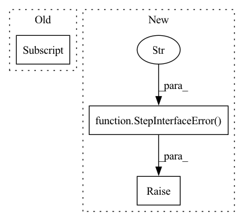

Pattern ID :35472
Before Change
self.resolve_output_artifact(
output_tuple[0],
output_dict[output_tuple[0]][0],
return_values[i] , // order preserved.
)
else:
// Resolve single outputAfter Change
return_values, output_annotations
):
if not isinstance(return_value, output_type):
raise StepInterfaceError(
f"Wrong type for output "{output_name}" of step "
f""{getattr(self, PARAM_STEP_NAME)}" (expected type: "
f"{output_type}, actual type: {type(return_value)})."
)
self.resolve_output_artifact(
output_name, output_dict[output_name][0], return_value
)In pattern: SUPERPATTERN
Frequency: 3
Non-data size: 3
Instances Fragment ID: 101381930
Project Name: maiot-io/zenml
Commit Name: c364fe5589c3f03a08b780260513e898958cc04b
Time: 2022-01-19
Author: schustmi@users.noreply.github.com
File Name: src/zenml/steps/utils.py
M Class Name: _FunctionExecutor
N Class Name: _FunctionExecutor
M Method Name: Do(4)
N Method Name: Do(4)
M Parent Class: BaseExecutor
N Parent Class: BaseExecutor
M File Name: src/zenml/steps/utils.py
N File Name: src/zenml/steps/utils.py
M Start Line: 408
M End Line: 428
N Start Line: 408
N End Line: 435
Before Change
// each and create a spec.
for return_tuple in return_spec.items():
cls.OUTPUT_SIGNATURE.update(
{return_tuple[0] : return_tuple[1]}
)
else:
// If its one output, then give it a single return name.After Change
arg_type = step_function_signature.annotations.get(arg, None)
if not arg_type:
raise StepInterfaceError(
f"Missing type annotation for argument "{arg}" when "
f"trying to create step "{name}". Please make sure to "
f"include type annotations for all your step inputs "
f"and outputs."
)
if issubclass(arg_type, BaseStepConfig):
// Raise an error if we already found a config in the signature
if cls.CONFIG_CLASS is not None: Fragment ID: 101381931
Project Name: maiot-io/zenml
Commit Name: 8ad287d81d8ca453fd79c996b7f2afbf977cce59
Time: 2021-11-17
Author: michael.schuster.ffb@googlemail.com
File Name: src/zenml/steps/base_step.py
M Class Name: BaseStepMeta
N Class Name: BaseStepMeta
M Method Name: __new__(4)
N Method Name: __new__(4)
M Parent Class: type
N Parent Class: type
M File Name: src/zenml/steps/base_step.py
N File Name: src/zenml/steps/base_step.py
M Start Line: 85
M End Line: 141
N Start Line: 72
N End Line: 158
Before Change
for i, default in enumerate(process_defaults):
// TODO: [HIGH] fix the implementation
process_args.reverse()
arg = process_args[i]
arg_type = process_spec.annotations.get(arg, None)
if not isinstance(arg_type, Param):
raise StepInterfaceError(
f"A default value in the signature of a step can only "After Change
process_defaults = process_spec.defaults
if process_defaults is not None:
raise StepInterfaceError(
"The usage of default values for "
"parameters is not fully implemented yet."
"Please do not use default values in "
"your step definition."
)
// for i, default in enumerate(process_defaults):
// // TODO: [HIGH] fix the implementation
// process_args.reverse()
// arg = process_args[i] Fragment ID: 101381933
Project Name: maiot-io/zenml
Commit Name: cfaf64a733041271d1b3710307c0ea561f190f70
Time: 2021-09-30
Author: bariscandurak@hotmail.com
File Name: src/zenml/steps/base_step.py
M Class Name: BaseStepMeta
N Class Name: BaseStepMeta
M Method Name: __new__(4)
N Method Name: __new__(4)
M Parent Class: type
N Parent Class: type
M File Name: src/zenml/steps/base_step.py
N File Name: src/zenml/steps/base_step.py
M Start Line: 17
M End Line: 59
N Start Line: 19
N End Line: 61